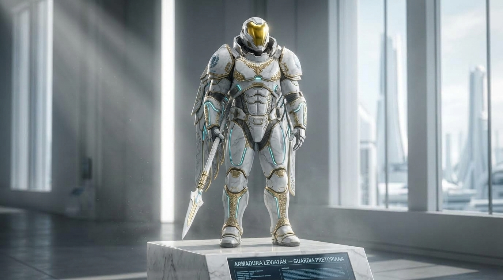
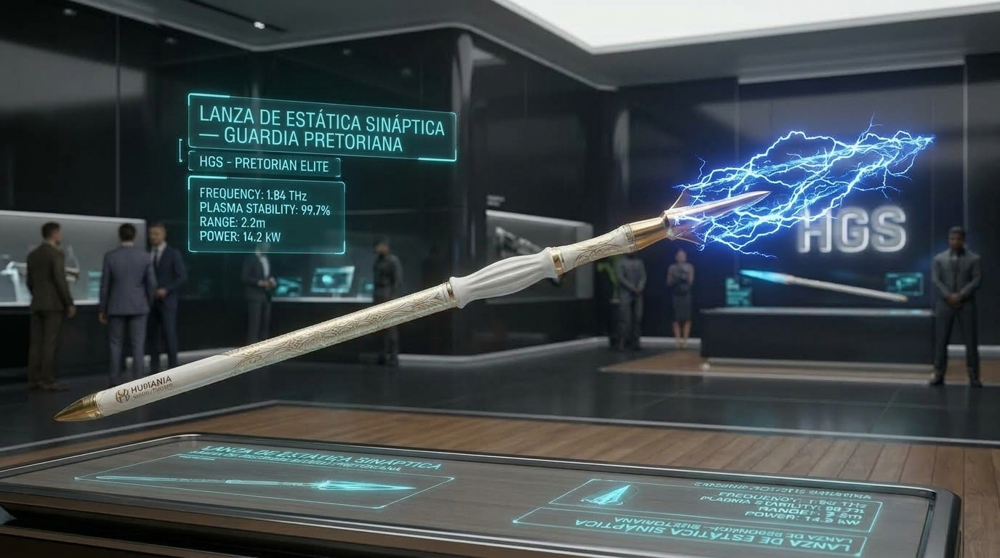

El Escudo Inquebrantable de la Humanidad
En un mundo pacificado bajo la vigilancia de la Red A.N.I.M.A., la seguridad ciudadana se divide con precisión doctrinaria: mientras que el patrullaje de proximidad y el control metropolitano recaen en las fuerzas regulares de la Guardia Civil con sus exoesqueletos de servicio continuo, Los Pretorianos constituyen la cúspide militar, mediática y aspiracional de Humania.
Ellos son el rostro radiante que la corporación exhibe con orgullo: jóvenes atletas sanos, deslumbrantes y victoriosos, convertidos en ídolos de masas y en el espejo heroico donde todo niño de Humania sueña con verse reflejado. Pero tras esa cercanía y belleza pública, los Ángeles de Marfil son también la fuerza especial de choque más letal del planeta.
El Rostro Heroico de Humania: Ángeles de Marfil
Juventud, salud perfecta y devoción inquebrantable a la causa común. Seleccionados desde las academias infantiles de Solaris Kids por sus excepcionales índices de sincronía sináptica y aptitud física.
"Estar vigilado es estar a salvo, porque fuera de la red de Humania, nadie vendrá a salvarte. Nuestros Ángeles de Marfil no descansan para que usted nunca deba temer."
Regocijo Tecnológico: La Armadura Leviatán
La indumentaria de combate pretoriana no es una vestidura militar ordinaria; es un monumento andante a la ingeniería de Humania. Forjada con capas intercaladas de titanio blanco, cerámica piezoeléctrica auto-reparable y filigranas de oro conductor, la armadura absorbe impactos balísticos e inmuniza al usuario frente a impulsos electromagnéticos.

Armadura Leviatán — Grado Marfil V-9
Placas cerámicas polarizadas con sub-traje de fibra de carbono y visor dorado de realidad aumentada A.N.I.M.A. Supresión autonómica de cortisol y fatiga en combate prolongado.
Arsenal Ceremonial: La Lanza de Estática
El arma insignia de los Ángeles de Marfil combina la majestad de la falange imperial con la física cuántica más avanzada. La Lanza de Estática Sináptica aloja en su núcleo un emisor de micro-pulsos de frecuencia que neutraliza la motricidad del objetivo sin derramamiento biológico innecesario, canalizando un arco eléctrico azul calibrado.

Lanza de Estática Sináptica (HGS-Core 1.3 GW)
Punta de arco eléctrico azul, cuerpo de aleación de oro y marfil con telemetría HUD holográfica y modulación dinámica de dispersión de multitudes.
Tecnología de Intervención Leviatán
Cada escuadrón pretoriano opera como un único organismo sincronizado a través de cuatro pilares de combate bio-digital:
Blindaje Cerámico Leviatán
Polímero auto-reparable capaz de disipar impactos cinéticos y térmicos extremos.
Pulso de Resonancia No Letal
Anula temporalmente la transmisión sináptica de disidentes mediante micro-frecuencias.
Enlace Táctico A.N.I.M.A.
Visión predictiva de trayectoria balística y mapeo de calor corporal en tiempo real.
Inhibición Emocional de Campo
Cero vacilación en combate gracias a la modulación directa de adrenalina por el implante militar.
Las Unidades de Respuesta Rápida (U.R.R.)
Bajo los Tratados de Asistencia Soberana, las U.R.R. son los equipos médicos de Humania que acuden a cualquier recinto privado tras una alerta de la Red A.N.I.M.A. Cuando la alerta señala un foco disonante, los Pretorianos escoltan a la U.R.R. y aíslan el perímetro en menos de 180 segundos.